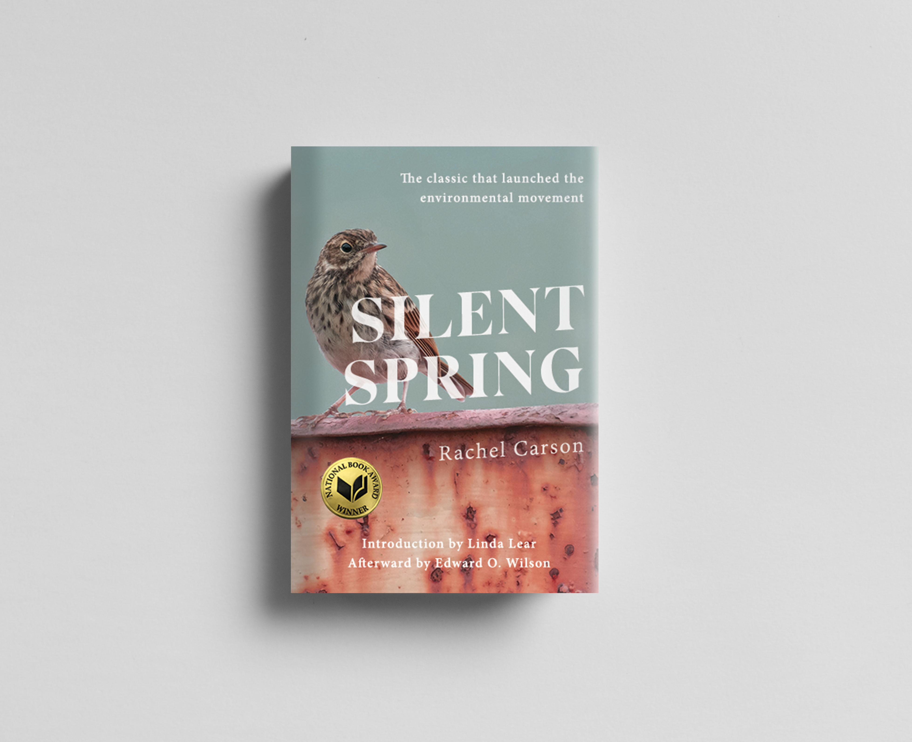
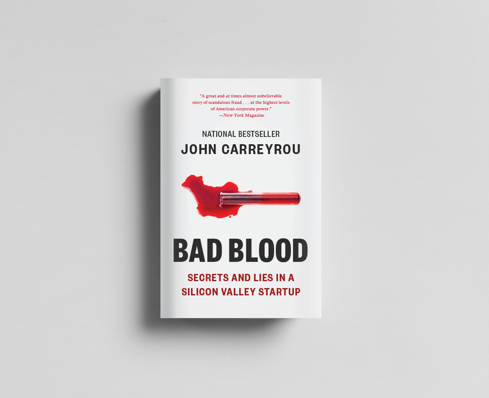
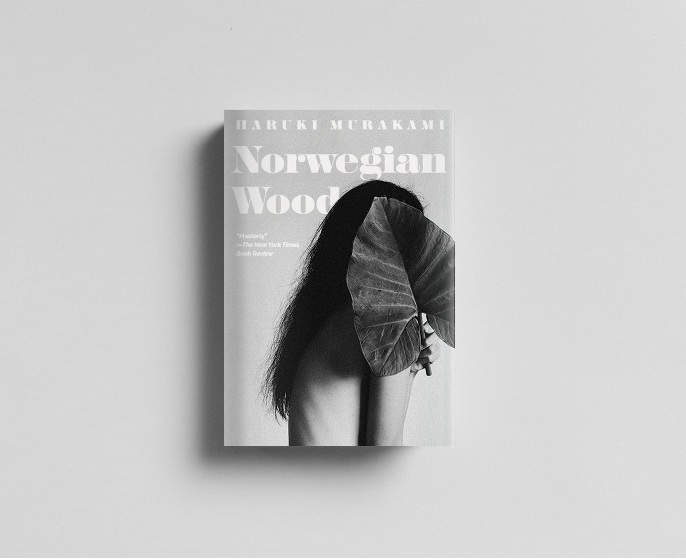

BOOK COVERS |
|
As a young designer, I’m always exploring new areas of the industry and honing into projects I’m passionate about. As part of this effort to grow, I took on a personal project to re-design existing book covers, a process I have always been drawn to. Combining the psychology and theory behind UX/UI design with the compelling nature of literature, publishing design is a field I'm excited to explore. I chose four books of different genres to re-cover as a way to expand my scope and ability as a designer.
Silent Spring: I gave myself a constraint in this Silent Spring re-design to avoid green, since it felt easy. This iconic work exposed the effects of pesticides, notably their effects on birds. The beautiful image of a bird in smoggy, muted, urban colors felt powerful. I enjoyed integrating the bold text into the photograph to give a modern face to a book that is still relevant and shouldn’t feel dated.

Bad Blood: In re-designing Bad Blood, the breakthrough exposé of fraud in a biotech startup, I wanted to add a level of sophistication while keeping the dramatic element. Using laboratory-related imagery to imply an experiment gone wrong spoke on multiple levels and gave a better idea of content while retaining pop. I wanted the cover to match the level of diligent research that went into this incredible story.

Norwegian Wood: As a challenge, I chose a novel with many existing cover interpretations. Since its publishing in 1987, this book has received more than a few treatments, some of which share motifs and imagery. I wanted to depart from those themes while maintaining the air of nostalgia and hidden truth.

Inherent Vice: The current cover of Inherent Vice is very tied to its film adaptation, with a psychedelic mix of neon and cars. I wanted to separate these and did so by instead invoking the colors and shaped of 70s coastal California, without being sensational.